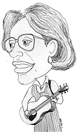

| Home
Venues played
Albums
Workshops
Performance calendar
Links

drawing by Jason Price
|
photo Nancy Pindrus |
Anne Price is a versatile and gifted singer born and raised in New York City. She sings a wide variety of traditional folk songs and many songs from contemporary songwriters, as well as songs she has written. Her wide repertoire includes Appalachian ballads, Irish and Scottish songs, Country songs, songs of the sea, cowboy songs, songs about work and the labor movement, feminist songs and love songs. Interpreted with her strong, rich, expressive voice, her songs can be funny or sad, thought-provoking or moving. She plays guitar and mountain dulcimer, or sings unaccompanied. She has been performing since 1979 in coffeehouses, schools, libraries, political benefits, and festivals. She is also a long time Executive Board member of the New York Pinewoods Folk Music Club. |
- "The richness of your voice astounded me."
- Peggy Seeger
- "Anne Price has a glorious expressive voice."
- Sol Weber
- "Anne Price sings just like early Joan Baez (with a touch of Carolyn Hester)
- Dirty Linen Magazine
- "Anne Price is well known to NYPFMC members for her lovely voice and sensitive accompaniments to songs both traditional and self-penned. She also has a wicked sense of humor."
- New York Pinewoods Folk Music Club Newsletter.
- "Surely among the most beautiful folk voices being heard today...She is a terrific songwriter as well as a wonderful singer."
- Joanne Davis, New York
Contact Anne!
Anne Price
anne@anneprice.com
80 Knolls Crescent, apt. 2M
Bronx, NY 10463
USA
Tel: +1 (718) 543-4971 | FAX: +1 (718) 543-1218
http://www.anneprice.com/index.html
This page maintained by Marnen Laibow-Koser (webmaster@anneprice.com)
Last modified Monday, 2 October 2000 |